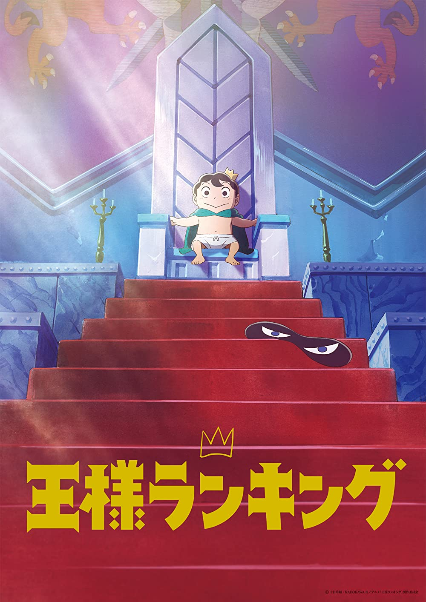

Ranking of Kings - Sōsuke Tōka

Overview & Recap
Ranking of Kings is a fantasy adventure anime based off of a manga by the same name. Bojji, a little prince, who is very weak. He was born abnormally small, weak, and deaf and is unable to properly wield a normal sword and can be injured easily. He goes on an adventure trying to become the best king he can. His main goal is to conquer his insecurities and fears.
Review
ahhhhhhh this anime is so cute T^T. The art style is more cartoonish but the plot sometimes gets really intense. You really wanna protect Bojji as he goes on his journey so you'll hate some characters a lot, but you'll also feel really sorry for some of them. The anime isn't fully out yet (s2p2 is coming out later this year i believe) but what's out so far is really eye catching. would recommend
Rating
hmmm 3.5/5. I enjoyed this anime so i would recommend wathcing it at least once. The character design is really really cute and it really controls the audience's emotions really well. I just didnt really like how plot of the story went towards the end.